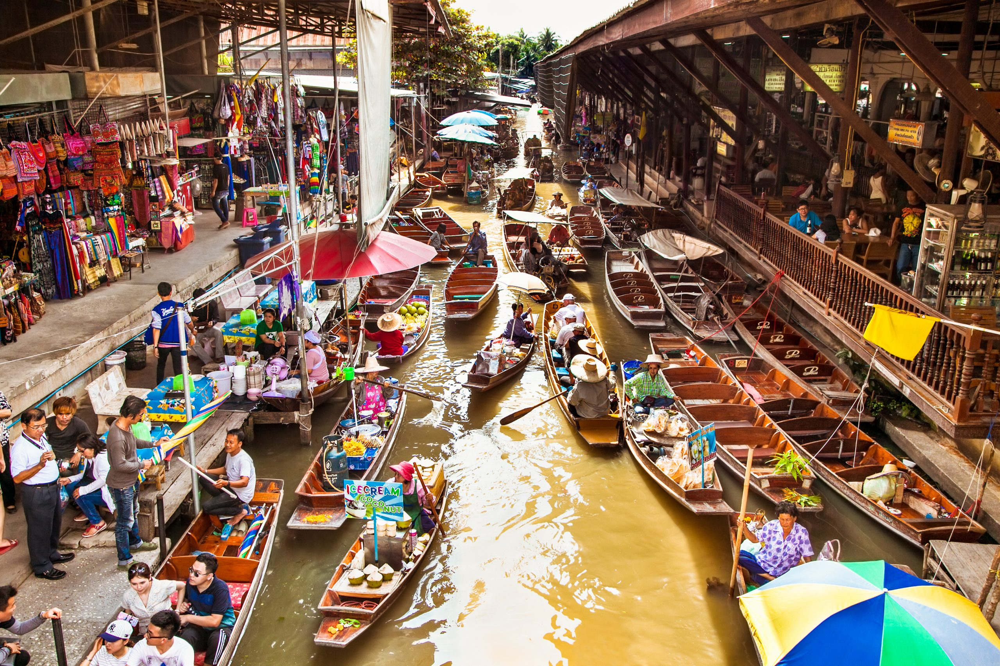

Damnoen Saduak Floating Market
Thailand's most famous floating market with vendors selling fresh fruits, local snacks, and souvenirs from traditional long-tail boats.
Distance: 100km from Bangkok | Best Time: 8:00-11:00 AM | Tour Cost: 1,500-2,500 THB